Kufic Calligraphy: History, Variants, and Free Generator
Explore Kufic (الخط الكوفي) — the oldest Arabic script and the calligraphy of the earliest Qur'an manuscripts. Learn its 1,400-year history, geometric characteristics, and variants including Square Kufic, Foliated, Floriated, and Knotted Kufic. Generate Kufic Arabic calligraphy free — no sign-up.
✓ 100% Free✓ No Signup✓ SVG Export✓ 11 Styles
Text Input
Font Style
Colors
Transform
Position
Background
WhiteTransparentColorImage
Canvas Size
InstagramFacebookTwitterHD
SquareWideIconBanner
×px
Export
Live Preview800 × 400 px
💡 Drag text to reposition • Use sliders for precise control
What is Kufic Calligraphy?
Kufic calligraphy (الخط الكوفي, al-khaṭṭ al-kūfī) is the oldest known Arabic script and the calligraphy in which the very first Qur'an manuscripts were written. Its name comes from the city of Kufa in present-day Iraq, an early Islamic center of learning where the script was standardized in the late 7th century CE.
Kufic is instantly recognizable by its angular, geometric letter forms: thick horizontal strokes, minimal vertical descent, right-angled corners, and a strong emphasis on rhythm and pattern rather than cursive flow. Where later Arabic scripts like Thuluth and Naskh flow in curves, Kufic stands upright, blocky, and architectural.
For roughly the first four centuries of Islam, Kufic was the only calligraphy style used for Qur'anic manuscripts — an association that gave it a permanent sacred and ceremonial status. Even after cursive scripts became dominant for everyday use, Kufic remained the preferred script for mosque inscriptions, ceramic decoration, coinage, and architectural ornament. In the modern era, Kufic has been rediscovered by graphic designers and logo artists worldwide for its bold, minimalist aesthetic that translates powerfully to modern branding.
The tool on this page uses Reem Kufi, a modern OpenType font by Khaled Hosny that captures the geometric Kufic spirit while remaining highly readable on screens — ideal for logo work, modern Islamic decor, wall art, and educational displays.
Kufic Script Characteristics
The Kufic script is instantly recognizable by five distinctive characteristics that set it apart from every other Arabic script:
1. Angular, geometric letter forms — Kufic letters are built from straight lines and right angles rather than flowing curves. Vertical strokes are short and blocky; horizontal strokes dominate the composition. There is minimal or no descent below the baseline. 2. Even stroke weight — unlike Thuluth's dramatic thick-thin variation, classical Kufic uses a nearly uniform stroke weight throughout, giving it a bold, monumental appearance well-suited to architectural inscription. 3. Horizontal emphasis — Kufic compositions read as long horizontal bands. Letters connect through the baseline rather than through cursive curves, and words appear as extended horizontal shapes rather than compact cursive units. 4. Sparse or absent diacritics — early Kufic Qur'ans were written without vowel marks and often without dots to distinguish similar letters (baʾ, taʾ, thaʾ). Modern digital Kufic (like Reem Kufi) supports full harakat, but classical Kufic Qur'ans were meant to be read by memory, with the visual composition itself becoming the aesthetic focus. 5. Geometric modularity — Kufic lends itself to grid-based composition. In its extreme form (Square Kufic), letters are constructed on an exact grid producing tile-like decorative patterns used on ceramic, brick, and stucco surfaces.
These qualities make Kufic exceptionally strong for modern logo design, contemporary Islamic decor, wall art, and any project that benefits from bold geometric visual weight. Reem Kufi (the font used by this page's generator) delivers all five characteristics in a clean, screen-friendly rendering.
Kufic Font & Downloads
Transparent PNG
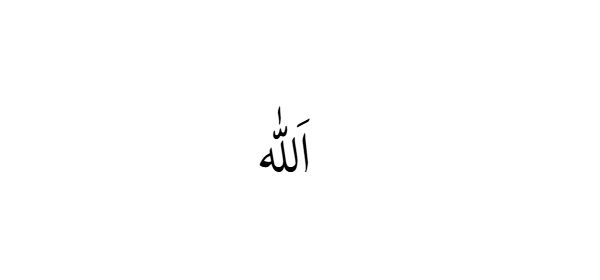
White backgroundBlack background
For digital Kufic calligraphy, the best free font is Reem Kufi, designed by Khaled Hosny as a modern take on the Kufic script. Reem Kufi is a display font specifically built for headings, logos, and short titles — it renders Kufic letter forms cleanly on screens while preserving the script's geometric character.
The generator above uses Reem Kufi as its Kufic font. To download your Kufic calligraphy design:
PNG (Transparent) — best for overlaying Kufic on architectural photos, ceramic tile designs, or geometric backgrounds. PNG (White or Black) — great for logo work, framed prints, minimalist wall art, and branding assets. SVG — essential for logo work — scales to any size without pixelation, and vector-editable in Illustrator or Inkscape. JPG — smallest file size for casual sharing.
All Kufic calligraphy downloads are free — no watermark, no sign-up, no account required. Reem Kufi is also available free from Google Fonts and can be installed locally for use in Photoshop, Illustrator, and any modern design tool.
History of Kufic Calligraphy & the Quran
Kufic calligraphy emerged in the late 7th century CE in the city of Kufa (in present-day Iraq), one of the earliest Islamic centers of learning and administration. It evolved from the earlier Ma'il (mixed) script used by Arab merchants, refined into a formal ceremonial style suited to producing the first written copies of the Qur'an.
For roughly four centuries — from the 7th to the 11th century CE — Kufic was the exclusive script of Qur'anic manuscripts. The oldest surviving Qur'an fragments (including the Birmingham Qur'an manuscript, radiocarbon-dated to 568-645 CE, and the Sanaa manuscript) are all written in Kufic. These early Kufic Qur'ans typically used dark brown ink on parchment, with red or gold dots indicating vowel marks (added centuries later) and gold or silver leaf illumination separating the surahs.
The script reached its ornamental peak during the Abbasid Caliphate (8th–13th century). Master calligraphers developed elaborate ornamental variants — Foliated Kufic (with leaf-shaped serifs), Floriated Kufic (letters growing into full flower forms), Knotted Kufic (with braided letter joins), and Plaited Kufic (letters interweaving into patterns) — all seen in mosque friezes, coinage, and manuscript borders.
As cursive scripts (Naskh, Thuluth) rose in the 11th–12th century for everyday manuscript use, Kufic transitioned to architectural and decorative use. It became the standard script for mosque inscriptions, ceramic tile decoration, textile weaving, and coinage — roles it continues to fill today. The 20th-century revival of Kufic in Islamic and modernist graphic design (led by designers like Emil Hisatel and later digital typographers like Khaled Hosny) has made Kufic once again one of the most influential scripts in contemporary Arabic typography.
Square Kufic and Other Kufic Variants
Over 1,400 years of use, Kufic has developed into a family of related but visually distinct variants. Here are the most important five:
1. Square Kufic (الخط الكوفي المربع) — the most extreme geometric form. Letters are constructed on an exact square grid, with all curves eliminated and every stroke either horizontal or vertical. Square Kufic produces tile-like patterns and is the variant seen on the exterior of Iranian mosques (Isfahan's Masjid-e Jameh), Central Asian madrasas, and modern minimalist Islamic decor. Because Square Kufic looks so different from other Arabic scripts, it is often used for logo design and geometric art today.
2. Foliated Kufic (كوفي مورّق) — Kufic letters with leaf-shaped or split serifs added to the terminal strokes. Widely used in Fatimid and early Ayyubid mosque decoration (10th–12th century). Balances geometric structure with organic ornament.
3. Floriated Kufic (كوفي مزهّر) — Kufic letters where the ascending strokes grow into full flower shapes, producing an intricately decorative composition. Peak use during the Abbasid era; often seen in Qur'anic manuscript borders and ceremonial texts.
4. Knotted Kufic (كوفي معقّد) — Kufic letters where the vertical stems interweave with braided or knotted joins, creating a pattern-like visual rhythm. Common in North African and Andalusian architecture.
5. Pseudo-Kufic — not an actual Arabic writing style. This is decorative Western art that imitates the visual form of Kufic without conveying real Arabic meaning. Seen in medieval European painting (halos, garment borders, especially in the work of artists like Giotto and Fra Angelico) — Christian Europeans adopted Kufic-like patterns as a marker of "exotic" or "biblical" antiquity. Genuine Arabic Kufic and Pseudo-Kufic are visually similar but only the former is real Arabic script.
The generator on this page uses Reem Kufi, a modern digital font in the general Kufic tradition. For truly Square Kufic tile patterns or ornate Foliated/Floriated compositions, a specialty commercial font or a calligrapher would be required.
Kufic vs Thuluth vs Naskh vs Diwani
Kufic is the oldest Arabic script. Here's how it compares to the three most common cursive alternatives you'll encounter:
Kufic vs Thuluth: Thuluth (ثلث) is the classical ornate cursive script, flowing and tall, used in most mosque calligraphic roundels and Qur'anic chapter headings. Kufic is Thuluth's earlier ancestor — angular, geometric, and blocky where Thuluth is fluid and curved. If Thuluth is the elegant script of formal religious art, Kufic is the ancient script of the earliest Qur'ans and the modern script of architectural inscription. See our Thuluth Calligraphy page for a full comparison.
Kufic vs Naskh: Naskh (نسخ) is the highly legible cursive script used in modern printed Qur'ans and everyday Arabic text. Naskh replaced Kufic as the standard Qur'anic script in the 11th century because of its superior readability. Kufic remains preferred for decorative and architectural use where visual impact matters more than fast reading.
Kufic vs Diwani: Diwani (ديواني) is the ornate Ottoman court script — flowing, tightly interlocking, decorative but hard to read. Kufic is at the opposite end of the Arabic calligraphy spectrum: rigid, geometric, and monumentally readable. Diwani says "imperial court elegance"; Kufic says "early Islamic gravitas" or "modern minimalist power."
When to choose Kufic: modern logo design, minimalist Islamic wall art, ceramic tile patterns, architectural inscriptions, contemporary branding for Muslim businesses, and any project where bold geometric visual weight matters more than cursive flow.
Famous Phrases in Kufic Calligraphy
Kufic is historically the most important script for religious Arabic phrases — every phrase below has been rendered in Kufic in mosque architecture, ceramic tile, or ancient Qur'anic manuscripts. Click through to each phrase's dedicated page for full history, meaning, and download options.
Bismillah in Kufic
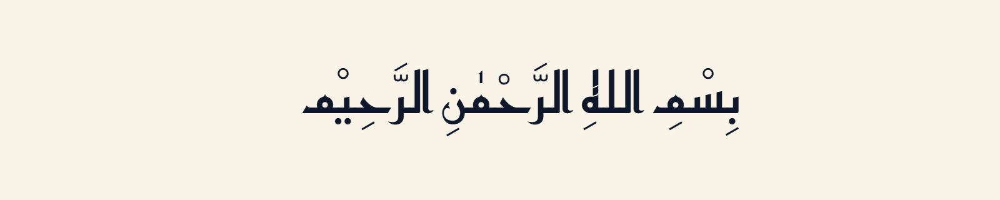
Bismillah al-Rahman al-Rahim is the opening verse of the Qur'an and, in Kufic, it was one of the most inscribed phrases on early Islamic mosque entrances, coins, and Qur'an title pages. The 19-character phrase renders beautifully in Kufic's horizontal geometric rhythm. See our Bismillah in Arabic Calligraphy page for meaning, styles, and downloads.
Shahada in Kufic
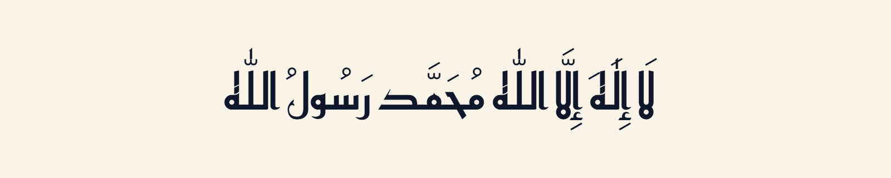
The Shahada — the Islamic declaration of faith — was inscribed in Kufic on the earliest Islamic coinage (the reform coins of Caliph Abd al-Malik, 696 CE) and in mosque friezes across the Umayyad and Abbasid empires. Its geometric Kufic form remains iconic today. See our Shahada in Arabic Calligraphy page for the full declaration and pronunciation.
Muhammad in Kufic
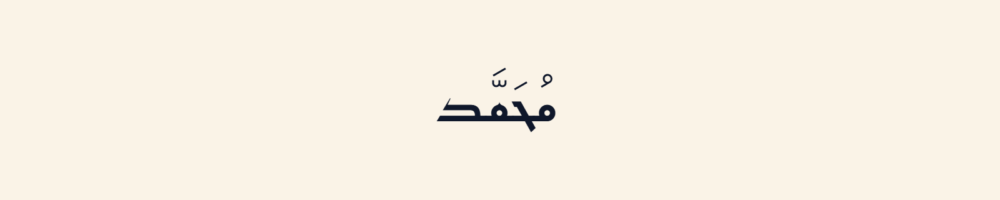
The name of the Prophet Muhammad ﷺ has been rendered in Kufic on mosque walls, ceramic tiles, and manuscripts since the 7th century. In Kufic's geometric structure, the four letters (م ح م د) form a distinctive angular pattern often used in decorative repeats. See our Muhammad in Arabic Calligraphy page for name meaning, history, and the tradition of writing the Prophet's name.
Alhamdulillah in Kufic
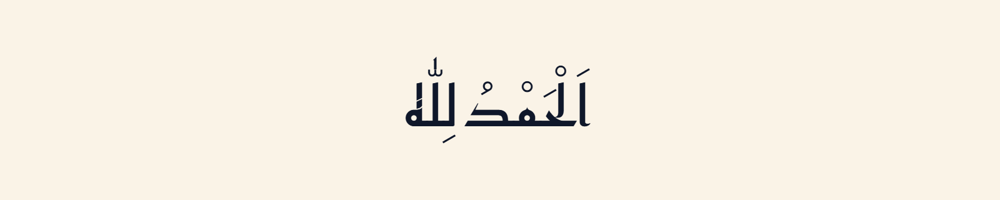
Alhamdulillah — "All praise is due to Allah" — in Kufic form has a strong horizontal band composition suitable for banner design and architectural friezes. See our Alhamdulillah in Arabic Calligraphy page for meaning, use cases, and downloads.
Featured Kufic Calligraphy Designs
20 hand-picked Kufic calligraphy designs featuring the most common Islamic phrases and names, across a range of colors and modern backgrounds. Designs refresh on each visit.
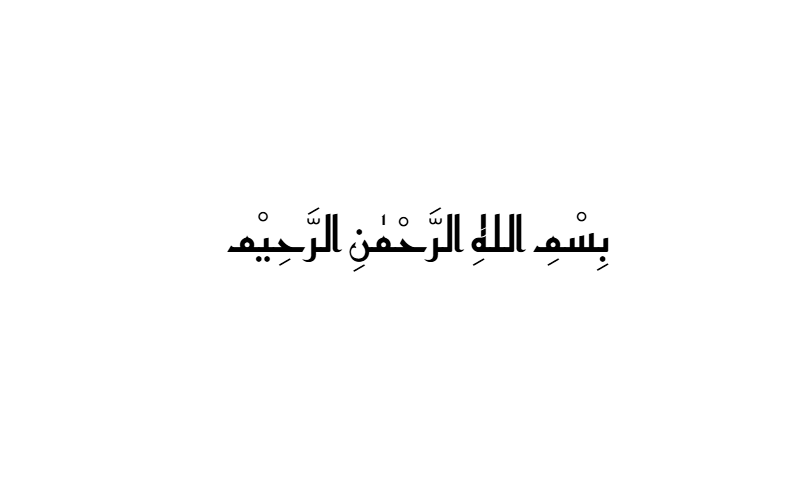
Bismillah · Black · Classic frame
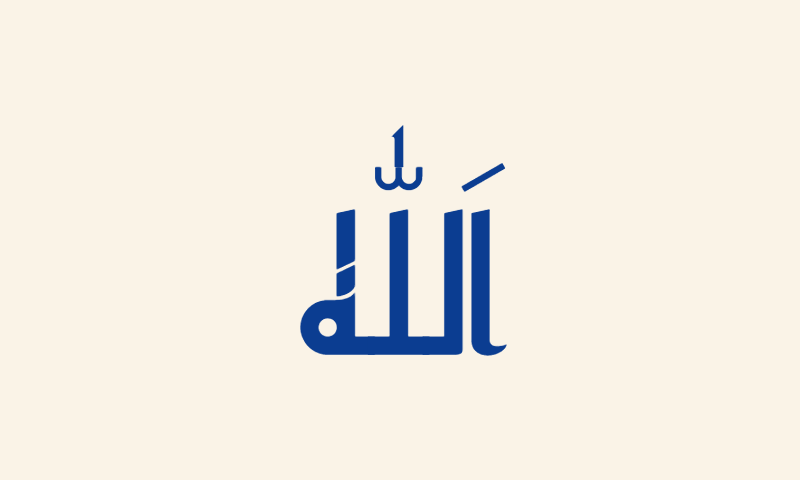
Allah · Navy · Modern print
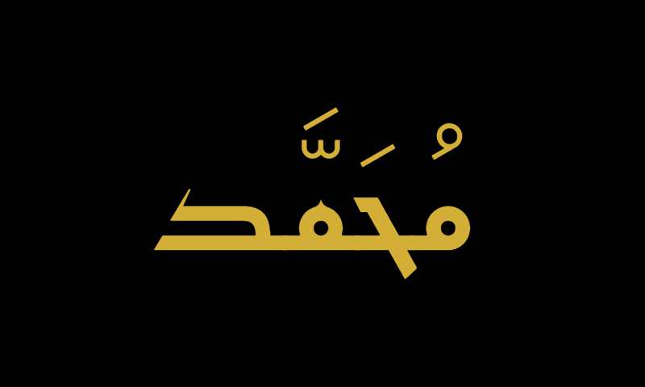
Muhammad · Gold · Premium logo
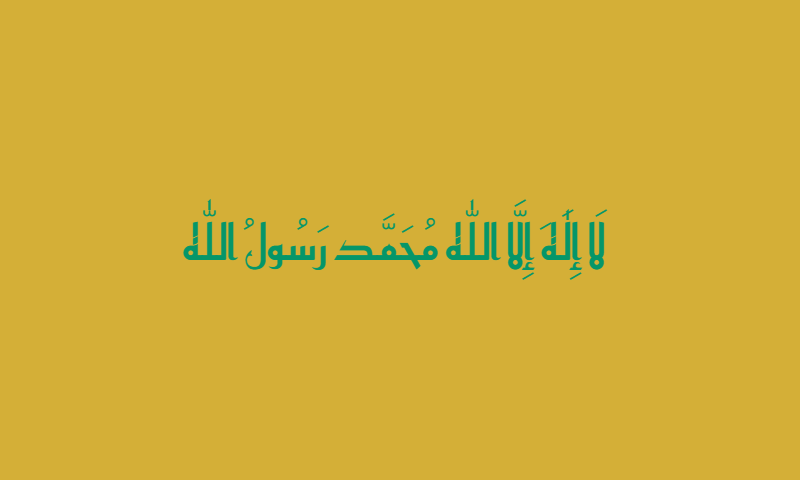
Shahada · Emerald · Tile design
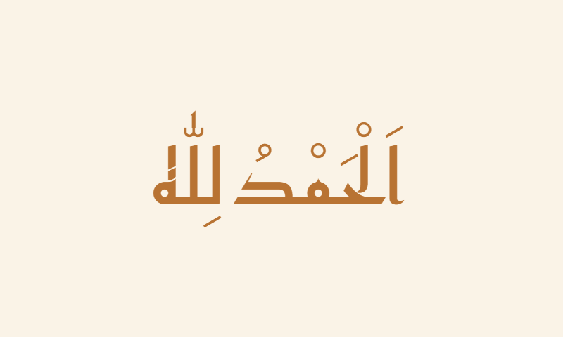
Alhamdulillah · Copper · Metallic
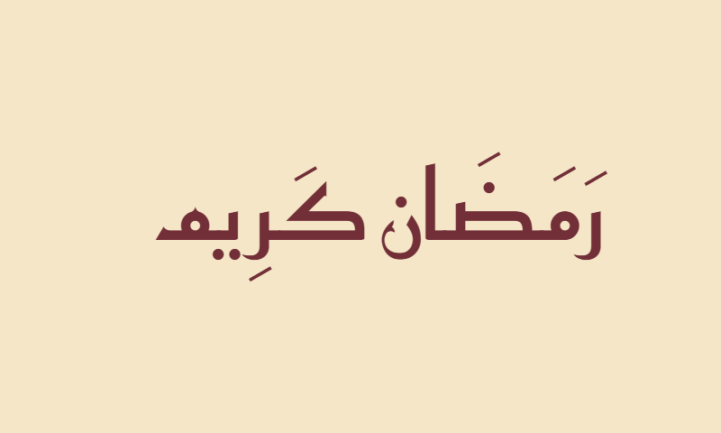
Ramadan Kareem · Burgundy · Card
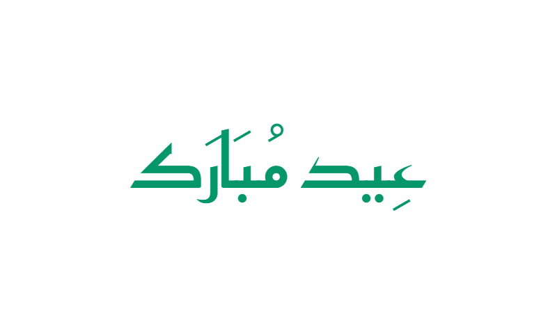
Eid Mubarak · Green · Festive
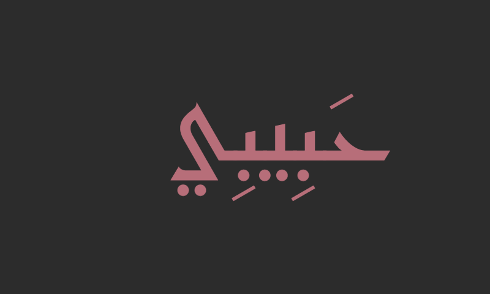
Habibi · Rose gold · Modern
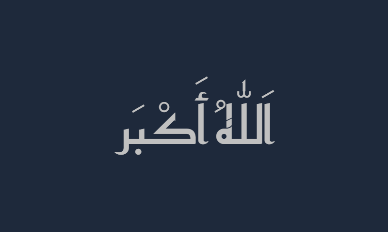
Allahu Akbar · Silver · Sleek
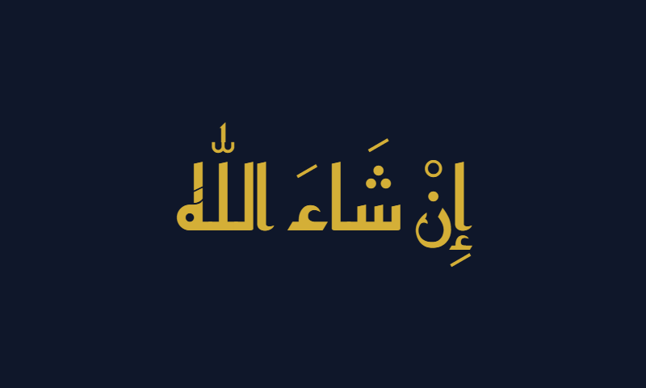
Insha'Allah · Gold · Deep navy
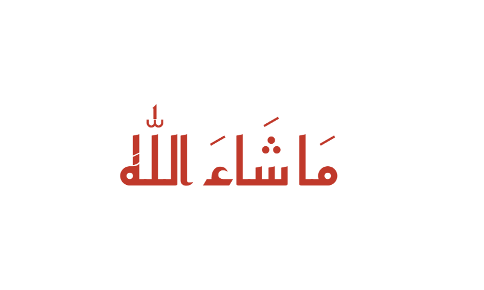
Masha'Allah · Red · Blessing
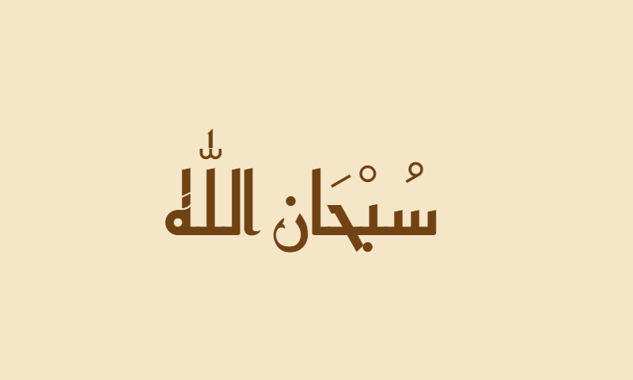
Subhanallah · Sepia · Vintage
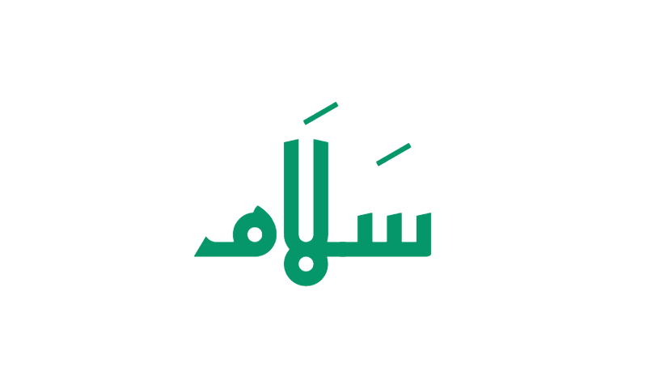
Salam · Green · Peace
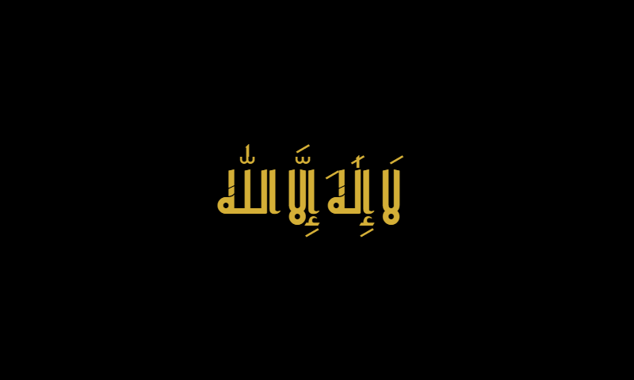
Tawhid · Gold · Sacred
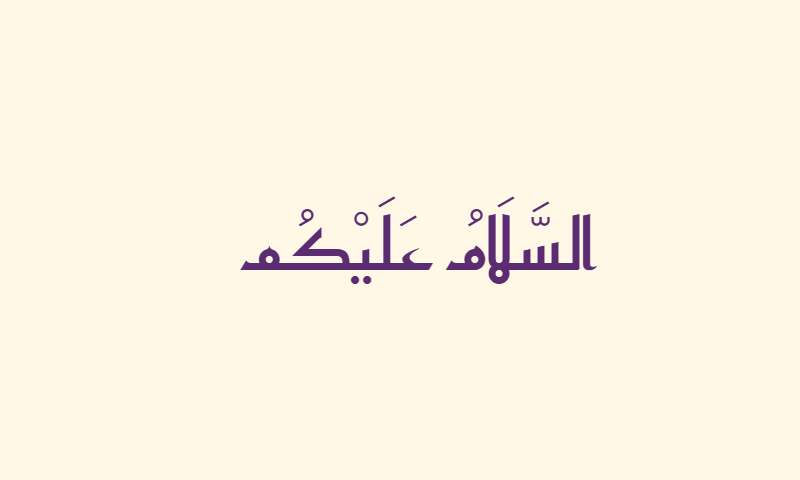
Assalamu Alaikum · Purple · Greeting
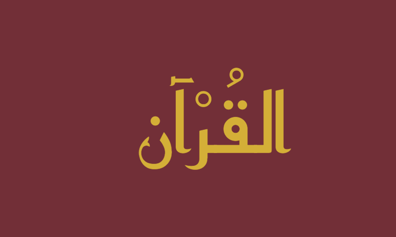
Al-Quran · Gold · Book cover
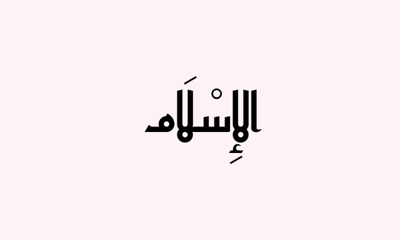
Al-Islam · Black · Soft
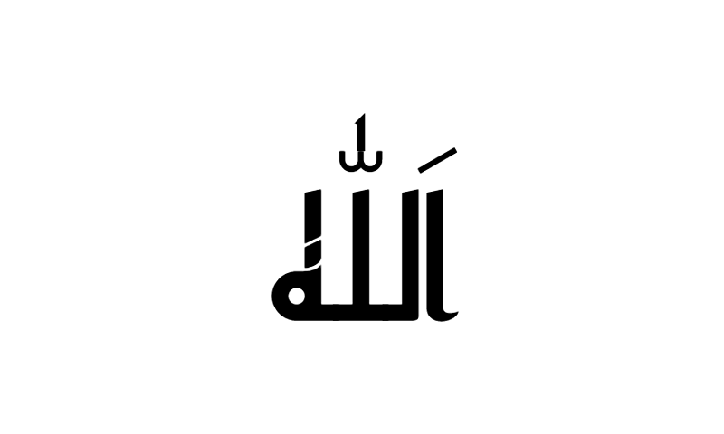
Allah · Black · Logo mark
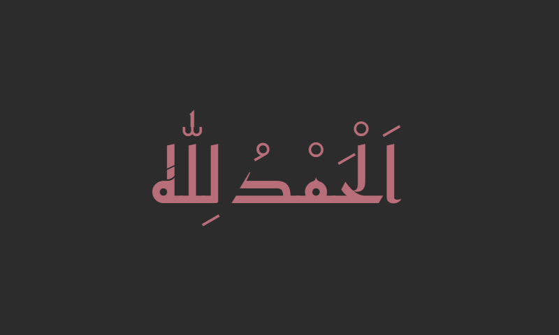
Alhamdulillah · Rose gold · Frame
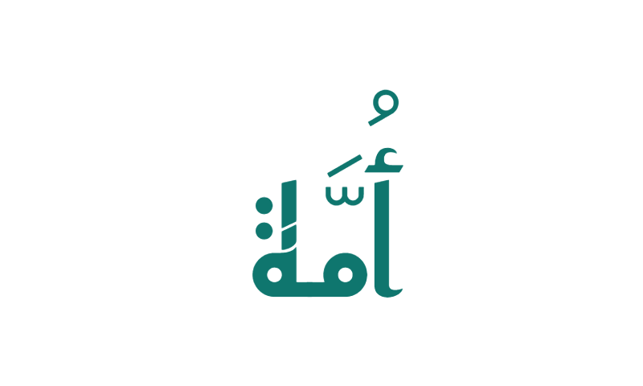
Ummah · Teal · Community
Frequently Asked Questions
What is Kufic calligraphy?
+
Kufic (الخط الكوفي) is the oldest known Arabic script, developed in the late 7th century CE in Kufa (present-day Iraq). It is instantly recognizable by its angular, geometric letter forms — thick horizontal strokes, right-angled corners, minimal vertical descent, and a strong horizontal reading rhythm. Kufic was the exclusive script of the earliest Qur'an manuscripts and remains widely used today for logo design, architectural inscriptions, and decorative Islamic art.
What is Square Kufic?
+
Square Kufic (الخط الكوفي المربع) is the most extreme geometric variant of Kufic, in which letters are constructed on an exact square grid with all curves eliminated and every stroke either horizontal or vertical. It produces tile-like decorative patterns famous from Iranian and Central Asian mosque exteriors (Isfahan's Masjid-e Jameh being a notable example). Square Kufic is especially popular in modern logo design because its blocky geometric structure translates perfectly to contemporary graphic identity.
What is the difference between Kufic and Thuluth?
+
Kufic is the earliest Arabic script — angular, geometric, blocky, with even stroke weight and strong horizontal emphasis. Thuluth is a later cursive script — flowing, tall, ornate, with dramatic thick-thin contrast in classical hand-drawn form. Kufic dominated Qur'anic manuscripts for the first four centuries of Islam; Thuluth then took over for ceremonial religious calligraphy while Kufic transitioned to architectural and decorative use, roles both scripts still fill today.
What is Pseudo-Kufic?
+
Pseudo-Kufic is not an actual Arabic writing style — it is decorative Western art (especially medieval European painting) that imitates the visual appearance of Kufic script without conveying any real Arabic meaning. Christian European artists like Giotto and Fra Angelico used Kufic-like decorative patterns on halos, garment borders, and biblical scenes as a marker of "exotic" or "biblical" antiquity. Genuine Arabic Kufic and Pseudo-Kufic can look visually similar, but only Kufic is actual readable Arabic script.
Which font renders Kufic calligraphy on a computer?
+
The best free digital font for Kufic calligraphy is Reem Kufi, designed by Khaled Hosny and available free from Google Fonts. Reem Kufi is a display font built specifically for headings, logos, and short titles — it captures Kufic's geometric letter forms cleanly on screens. The generator on this page uses Reem Kufi as its Kufic font. For truly Square Kufic tile patterns or ornate Foliated/Floriated Kufic compositions, a specialty commercial font or a professional calligrapher would be required.